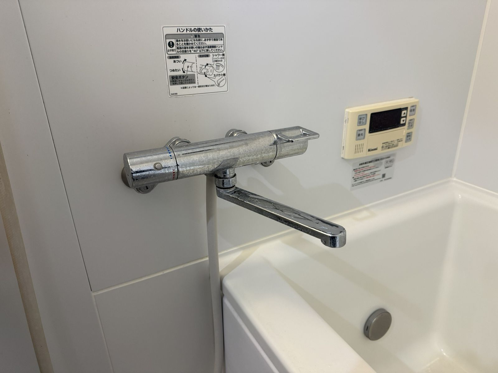

浴室水栓の交換
既存の混合水栓を取り外し、新しい混合水栓へ交換しました。水栓の仕入れから交換まで滝沢が担当しています。


古くなった蛇口、水漏れが続く水栓、使いにくいレバー。浴室とキッチンの水栓交換は、滝沢が水栓の仕入れから交換まで担当します。お客様が用意した水栓の取付もご相談ください。写真を送るだけのLINE相談は0円です。
交換実績
既存の混合水栓を取り外し、新しい混合水栓へ交換しました。水栓の仕入れから交換まで滝沢が担当しています。

カートリッジからの水漏れをきっかけに、キッチン水栓の本体を交換しました。


対応範囲
給水装置工事主任技術者などの資格を持っています。保有資格を見る
送ってほしい写真
正面から、水栓全体が入るように。
壁や台に付いている根元。キッチンはシンク下も。
シールや説明書があれば。なくても大丈夫です。
料金目安
仕入れから任せたい場合も、ご自身で購入済みの場合も、作業前に金額を確認してから進めます。ほかの料金は料金目安をご覧ください。
流れ
水栓の写真を送信。
交換できる水栓か確認。
作業と水栓代を案内。
火曜・水曜中心。
金額確認後に対応。
FAQ
ご相談いただけます。購入前に商品情報と取付場所の写真を送っていただくと、対応できるかを確認できます。
大丈夫です。気になっていることと水栓全体の写真を送ってください。対応できる内容かを確認してからご案内します。
相談できます。賃貸の設備は管理会社やオーナーの判断が必要な場合があるため、先に連絡すべきかも一緒に整理します。
緊急漏水は対応範囲外です。止水栓を閉め、水道専門業者や管理会社へ連絡してください。
交換か分からない水漏れの初期確認は妙典・行徳の水漏れ相談をご覧ください。
まずは写真で確認
浴室・キッチンの水栓全体と、気になっていることを一言添えてください。